Data Lunch: Week 3
Causal models
The doctor paradox
Two surgeons, one normal and one famous, have different success rates for a procedure. How should we interpret this?
| Success | |
| Normal Surgeon | 89.6% |
| Famous Surgeon | 74.9% |
How about now?
| Standard | Complex | Critical | Total | |
| Normal Surgeon | 97.3% | 66.0% | 38.0% | 89.6% |
| Famous Surgeon | 99.7% | 75.0% | 50.0% | 74.9% |
What changed?
- The famous surgeon gets the hardest cases.
- Hard cases fail more often, whoever operates.
- Case difficulty interferes: it affects who operates and whether the operation succeeds.
- Adding one variable to the comparison reversed the finding.
Which number is right?
- Both tables are calculated correctly from the same records.
- They answer different questions:
- “Whose patients did better last year?” → the normal surgeon
- “For my operation, who gives me the better chance?” → the famous surgeon
- The data alone can’t tell us which comparison to make.
- We need a story about how the data was made. That story is a causal model.
Goals this week
- Part 1: Concepts
- DAGs: drawing what causes what
- What “cause” means in statistics
- The workflow: estimand → generative model → statistical model → data → estimate
- Worked example: does sex affect weight?
- Part 2: Applied
- Designing DAGs for your own questions
What is a DAG?
- Directed: arrows point one way, from cause to effect.
- Acyclic: no loops. Nothing causes itself.
- Graph: variables (circles) joined by arrows.
- An arrow means “directly causes”.
- A missing arrow is a claim too: “no direct effect”.
- A DAG shows what depends on what, not how much.
- It’s a picture of our assumptions, drawn from what we know about the world, not a result we get from data.
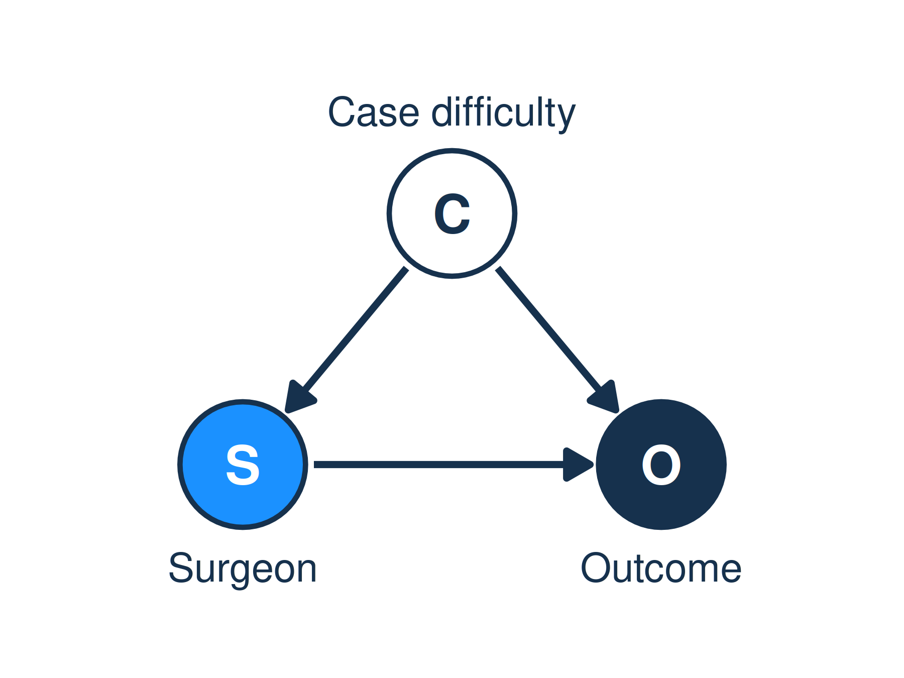
Exposure: the cause we’re asking about. Outcome: the effect we care about.
What is a “cause”?
- In statistics, X causes Y if intervening to change X would change Y, on average.
- “If this patient were switched to the famous surgeon, would their chance of success change?”
- Causes are probabilistic: smoking causes lung cancer, even though most smokers never get it.
- Causes are many: almost every outcome has lots of causes acting at once.
- A causal claim is always a simplification of a messy world. In social science we usually think of causes as places where we could intervene: a policy, a treatment, a decision.
Seeing vs. doing
Seeing
P( success | famous surgeon )
Among patients who happened to get the famous surgeon, how many recovered?
Includes all his hard cases.
Doing
P( success | do(famous surgeon) )
If we assigned patients to the famous surgeon, how many would recover?
This is the causal question.
- Data gives us seeing. Most of our questions are about doing.
- A causal model is the bridge between them.
The workflow
EstimandWhat exactly do we want to know?
→
Generative modelHow do we think the data was made?
→
Statistical modelWhat should we fit?
→
DataWhat did we observe?
→
EstimateWhich values are most plausible?
- Estimand: the question, stated precisely enough that a number could answer it.
- Generative model: our causal story (a DAG, plus a simulation of it).
- Statistical model: derived from the generative model, not picked from a menu.
- Estimate: the posterior. Given what we’ve seen, which values of the estimand are most plausible?
- The shaded steps are science. They come first, before we touch the data.
Worked example: does sex affect weight?
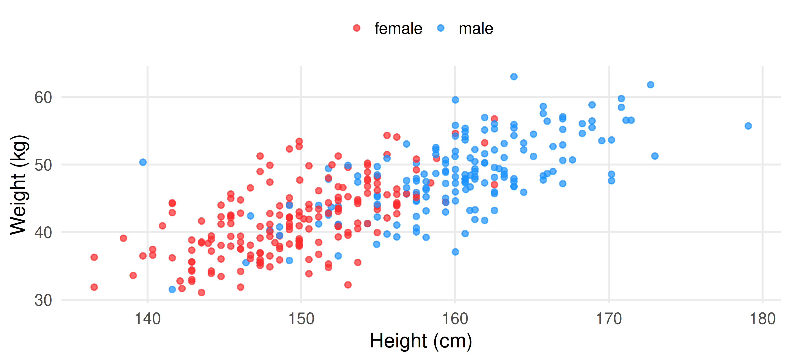
- The !Kung San adults from Week 2. Men are taller and heavier.
Step 1: The estimand
- “Does sex affect weight?” is too vague to answer.
- More precisely:
Estimand
How much heavier, on average, would an adult be if they were male rather than female?
- The answer is a number, in kg: the effect of sex on weight.
Step 2: The generative model
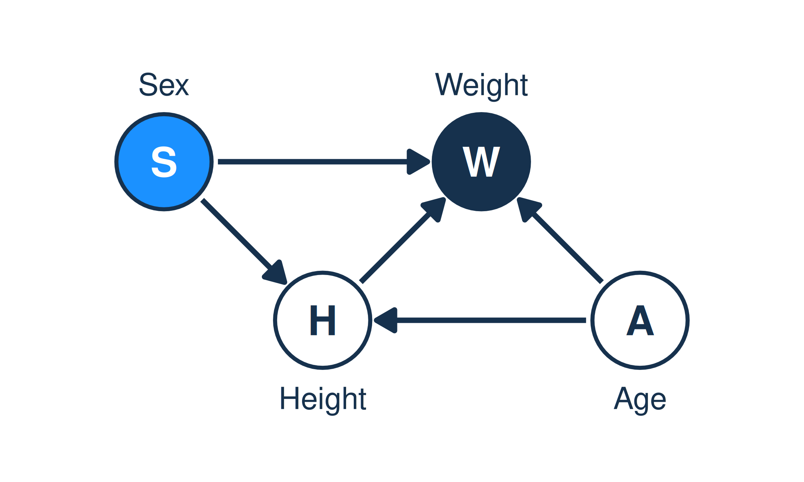
- Sex affects height (S → H).
- Height affects weight (H → W).
- Sex might also affect weight directly, e.g. through muscle mass (S → W).
- Age affects height and weight (A → H, A → W).
- Nothing in this picture causes sex.
Step 2: Simulate the world we drew
simulate_people <- function(n) {
tibble(
sex = sample(c("female", "male"), n, TRUE),
male = sex == "male",
# S -> H: men 10 cm taller
height = rnorm(n, 150 + 10 * male, 6),
# H -> W: 0.6 kg per cm
# S -> W: men 2 kg heavier at the
# same height
weight = rnorm(
n,
-45 + 0.6 * height + 2 * male,
4
)
)
}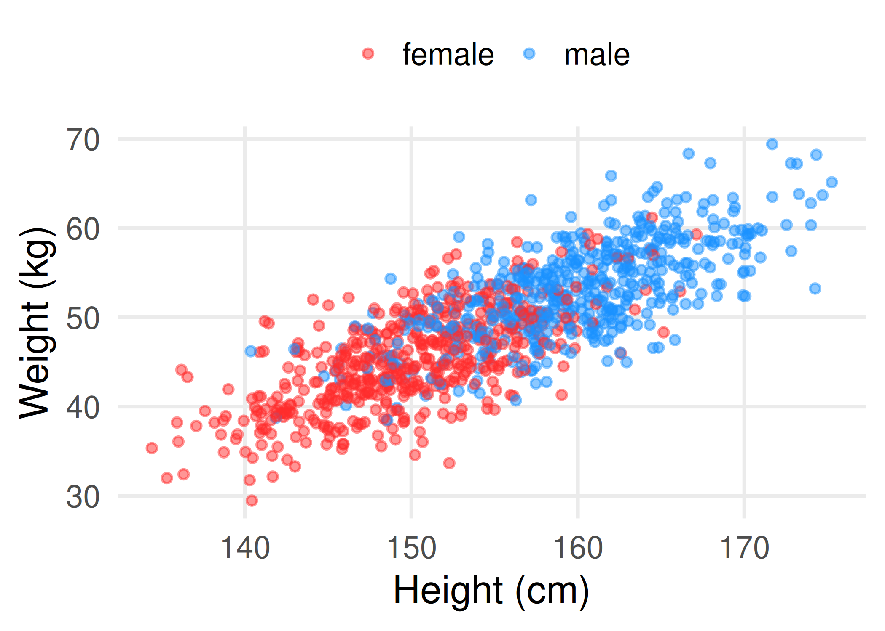
- In this made-up world we know the answers:
- Through the direct path alone: 2 kg.
- Through both paths: 2 + 0.6 × 10 = 8 kg.
Generative Model Demo
#| '!! shinylive warning !!': |
#| shinylive does not work in self-contained HTML documents.
#| Please set `embed-resources: false` in your metadata.
#| standalone: true
library(shiny)
library(bslib)
library(ggplot2)
library(tibble)
library(ggiraph)
INITIAL_ALPHA_FEMALE <- -40
INITIAL_ALPHA_MALE <- -32
INITIAL_BETA <- 0.6
INITIAL_SIGMA <- 5
N_POINTS <- 200
HEIGHT_MEAN_CM <- 155
HEIGHT_SD_CM <- 25
KG_TO_LB <- 2.20462
CM_PER_IN <- 2.54
CSS <- "
.plot-wrap {
position: relative;
width: 100%;
padding-left: 25px;
padding-bottom: 25px;
}
.height-units-inline {
position: absolute;
left: 50%;
bottom: 0;
transform: translateX(-50%);
width: 360px;
z-index: 10;
}
.weight-units-inline {
position: absolute;
left: 0;
bottom: 0;
transform: translateY(-50%) rotate(-90deg);
transform-origin: left top;
width: 45%;
z-index: 10;
}
.height-units-inline .shiny-input-container,
.weight-units-inline .shiny-input-container {
margin-bottom: 0;
display: flex;
align-items: center;
gap: 0.5rem;
}
.weight-units-inline .shiny-input-container {
justify-content: center;
width: 100%;
}
.height-units-inline label,
.weight-units-inline label {
margin-bottom: 0;
font-weight: 600;
white-space: nowrap;
}
.height-units-inline .form-select,
.weight-units-inline .form-select,
.height-units-inline select,
.weight-units-inline select {
flex: 1;
min-width: 0;
}
.height-units-inline .selectize-control,
.weight-units-inline .selectize-control {
width: 200px;
}
"
param_row <- function(input_ui, button_id, button_margin = "1rem") {
tags$div(
class = "d-flex flex-nowrap gap-2 align-items-end",
input_ui,
tags$div(
class = "d-flex flex-column justify-content-end",
actionButton(
button_id,
"↺",
class = "btn-primary",
style = paste0("margin-bottom: ", button_margin, ";")
)
)
)
}
ui <- page_sidebar(
tags$head(tags$style(HTML(CSS))),
sidebar = sidebar(
open = "always",
width = 430,
style = "gap: 10px",
withMathJax(),
tags$h2("Generative Models"),
checkboxInput("include_sex", "Include sex?", value = FALSE),
tags$div(uiOutput("modelDef")),
tags$hr(),
tags$h3("Parameters"),
uiOutput("alpha_ui"),
param_row(
numericInput(
"beta",
"𝛽 (coefficient)",
value = INITIAL_BETA,
width = "100%"
),
"generate_beta"
),
param_row(
sliderInput(
"sigma",
"𝜎 (residual deviation)",
min = 0,
max = 100,
value = INITIAL_SIGMA,
width = "100%"
),
"generate_sigma",
button_margin = "1.5rem"
),
# tags$hr(),
# actionButton(
# "generate_data",
# "Generate new data",
# class = "btn-secondary w-100"
# )
),
tags$p("What are we doing here?"),
tags$ul(
tags$li(
"When fitting a statistical model, we use observed data to infer the values of unknown parameters."
),
tags$li(
"When simulating from a generative model, we do the opposite: we choose parameter values and generate synthetic data from them to see what kinds of predictions the model would make."
)
),
div(
class = "plot-wrap",
div(
class = "weight-units-inline",
selectInput(
"weight_units",
"Weight",
choices = c("Kilograms", "Pounds"),
selected = "Kilograms"
)
),
girafeOutput("generatedPlot"),
div(
class = "height-units-inline",
selectInput(
"height_units",
"Height",
choices = c("Centimeters", "Inches", "Standardized Units"),
selected = "Centimeters"
)
)
)
)
server <- function(input, output, session) {
root_alpha_female <- reactiveVal(INITIAL_ALPHA_FEMALE)
root_alpha_male <- reactiveVal(INITIAL_ALPHA_MALE)
root_beta <- reactiveVal(INITIAL_BETA)
root_sigma <- reactiveVal(INITIAL_SIGMA)
updating_inputs <- reactiveVal(FALSE)
weight_scale <- reactive({
switch(
input$weight_units,
"Kilograms" = 1,
"Pounds" = KG_TO_LB,
1
)
})
alpha_shift_root <- reactive({
switch(
input$height_units,
"Centimeters" = 0,
"Inches" = 0,
"Standardized Units" = HEIGHT_MEAN_CM * root_beta(),
0
)
})
beta_display_scale <- reactive({
switch(
input$height_units,
"Centimeters" = 1,
"Inches" = CM_PER_IN,
"Standardized Units" = HEIGHT_SD_CM,
1
) *
weight_scale()
})
display_alpha_female <- reactive({
(root_alpha_female() + alpha_shift_root()) * weight_scale()
})
display_alpha_male <- reactive({
(root_alpha_male() + alpha_shift_root()) * weight_scale()
})
display_alpha <- reactive({
(root_alpha_female() + alpha_shift_root()) * weight_scale()
})
display_beta <- reactive({
root_beta() * beta_display_scale()
})
display_sigma <- reactive({
root_sigma() * weight_scale()
})
height_unit_label <- reactive({
switch(
input$height_units,
"Centimeters" = "cm",
"Inches" = "in",
"Standardized Units" = "z",
""
)
})
weight_unit_label <- reactive({
switch(
input$weight_units,
"Kilograms" = "kg",
"Pounds" = "lb",
""
)
})
canonical_to_display_height <- function(height_cm, units) {
switch(
units,
"Centimeters" = height_cm,
"Inches" = height_cm / CM_PER_IN,
"Standardized Units" = (height_cm - HEIGHT_MEAN_CM) / HEIGHT_SD_CM,
height_cm
)
}
canonical_to_display_weight <- function(weight_kg, units) {
switch(
units,
"Kilograms" = weight_kg,
"Pounds" = weight_kg * KG_TO_LB,
weight_kg
)
}
set_root_alpha_from_display <- function(
alpha_display,
which = c("female", "male"),
beta_root = root_beta()
) {
which <- match.arg(which)
shift <- switch(
input$height_units,
"Centimeters" = 0,
"Inches" = 0,
"Standardized Units" = HEIGHT_MEAN_CM * beta_root,
0
)
alpha_root <- (alpha_display / weight_scale()) - shift
if (which == "female") {
root_alpha_female(alpha_root)
} else {
root_alpha_male(alpha_root)
}
}
sync_inputs_from_root <- function() {
vals <- isolate(list(
include_sex = isTRUE(input$include_sex),
alpha = round(display_alpha(), 3),
alpha_female = round(display_alpha_female(), 3),
alpha_male = round(display_alpha_male(), 3),
beta = round(display_beta(), 3),
sigma = min(max(display_sigma(), 0), 100)
))
updating_inputs(TRUE)
on.exit(updating_inputs(FALSE), add = TRUE)
freezeReactiveValue(input, "alpha")
freezeReactiveValue(input, "alpha_female")
freezeReactiveValue(input, "alpha_male")
freezeReactiveValue(input, "beta")
freezeReactiveValue(input, "sigma")
if (vals$include_sex) {
updateNumericInput(session, "alpha_female", value = vals$alpha_female)
updateNumericInput(session, "alpha_male", value = vals$alpha_male)
} else {
updateNumericInput(session, "alpha", value = vals$alpha)
}
updateNumericInput(session, "beta", value = vals$beta)
updateSliderInput(session, "sigma", value = vals$sigma)
}
sim_data <- reactiveVal(NULL)
regenerate_data <- function() {
sim_data(list(
height_z = rnorm(N_POINTS, 0, 1),
resid_z = rnorm(N_POINTS, 0, 1),
sex = rbinom(N_POINTS, 1, 0.5)
))
}
regenerate_data()
observeEvent(input$generate_data, {
regenerate_data()
})
observeEvent(input$generate_alpha, {
if (isTRUE(input$include_sex)) {
root_alpha_female(rnorm(1, mean = 60, sd = 10))
root_alpha_male(rnorm(1, mean = 60, sd = 10))
} else {
root_alpha_female(rnorm(1, mean = 60, sd = 10))
root_alpha_male(root_alpha_female())
}
sync_inputs_from_root()
})
observeEvent(input$generate_alpha_female, {
root_alpha_female(rnorm(1, mean = 60, sd = 10))
sync_inputs_from_root()
})
observeEvent(input$generate_alpha_male, {
root_alpha_male(rnorm(1, mean = 60, sd = 10))
sync_inputs_from_root()
})
observeEvent(input$generate_beta, {
new_root_beta <- rnorm(1, mean = 0, sd = 5)
if (identical(input$height_units, "Standardized Units")) {
if (isTRUE(input$include_sex)) {
alpha_female_disp <- isolate(as.numeric(input$alpha_female))
alpha_male_disp <- isolate(as.numeric(input$alpha_male))
root_beta(new_root_beta)
set_root_alpha_from_display(
alpha_female_disp,
"female",
beta_root = new_root_beta
)
set_root_alpha_from_display(
alpha_male_disp,
"male",
beta_root = new_root_beta
)
updating_inputs(TRUE)
on.exit(updating_inputs(FALSE), add = TRUE)
freezeReactiveValue(input, "alpha_female")
freezeReactiveValue(input, "alpha_male")
freezeReactiveValue(input, "beta")
updateNumericInput(
session,
"alpha_female",
value = round(alpha_female_disp, 3)
)
updateNumericInput(
session,
"alpha_male",
value = round(alpha_male_disp, 3)
)
updateNumericInput(
session,
"beta",
value = round(new_root_beta * beta_display_scale(), 3)
)
} else {
alpha_disp <- isolate(as.numeric(input$alpha))
root_beta(new_root_beta)
set_root_alpha_from_display(
alpha_disp,
"female",
beta_root = new_root_beta
)
root_alpha_male(root_alpha_female())
updating_inputs(TRUE)
on.exit(updating_inputs(FALSE), add = TRUE)
freezeReactiveValue(input, "alpha")
freezeReactiveValue(input, "beta")
updateNumericInput(session, "alpha", value = round(alpha_disp, 3))
updateNumericInput(
session,
"beta",
value = round(new_root_beta * beta_display_scale(), 3)
)
}
} else {
root_beta(new_root_beta)
sync_inputs_from_root()
}
})
observeEvent(input$generate_sigma, {
root_sigma(abs(rnorm(1, mean = 0, sd = 10)))
sync_inputs_from_root()
})
observeEvent(
input$alpha,
{
req(!updating_inputs(), !is.na(input$alpha))
set_root_alpha_from_display(as.numeric(input$alpha), "female")
root_alpha_male(root_alpha_female())
},
ignoreInit = TRUE
)
observeEvent(
input$alpha_female,
{
req(!updating_inputs(), !is.na(input$alpha_female))
set_root_alpha_from_display(as.numeric(input$alpha_female), "female")
},
ignoreInit = TRUE
)
observeEvent(
input$alpha_male,
{
req(!updating_inputs(), !is.na(input$alpha_male))
set_root_alpha_from_display(as.numeric(input$alpha_male), "male")
},
ignoreInit = TRUE
)
observeEvent(
input$beta,
{
req(!updating_inputs(), !is.na(input$beta))
new_root_beta <- as.numeric(input$beta) / beta_display_scale()
if (identical(input$height_units, "Standardized Units")) {
if (isTRUE(input$include_sex)) {
alpha_female_disp <- isolate(as.numeric(input$alpha_female))
alpha_male_disp <- isolate(as.numeric(input$alpha_male))
root_beta(new_root_beta)
set_root_alpha_from_display(
alpha_female_disp,
"female",
beta_root = new_root_beta
)
set_root_alpha_from_display(
alpha_male_disp,
"male",
beta_root = new_root_beta
)
updating_inputs(TRUE)
on.exit(updating_inputs(FALSE), add = TRUE)
freezeReactiveValue(input, "alpha_female")
freezeReactiveValue(input, "alpha_male")
updateNumericInput(
session,
"alpha_female",
value = round(alpha_female_disp, 3)
)
updateNumericInput(
session,
"alpha_male",
value = round(alpha_male_disp, 3)
)
} else {
alpha_disp <- isolate(as.numeric(input$alpha))
root_beta(new_root_beta)
set_root_alpha_from_display(
alpha_disp,
"female",
beta_root = new_root_beta
)
root_alpha_male(root_alpha_female())
updating_inputs(TRUE)
on.exit(updating_inputs(FALSE), add = TRUE)
freezeReactiveValue(input, "alpha")
updateNumericInput(session, "alpha", value = round(alpha_disp, 3))
}
} else {
root_beta(new_root_beta)
}
},
ignoreInit = TRUE
)
observeEvent(
input$sigma,
{
req(!updating_inputs(), !is.na(input$sigma))
root_sigma(as.numeric(input$sigma) / weight_scale())
},
ignoreInit = TRUE
)
observeEvent(
input$include_sex,
{
if (isTRUE(input$include_sex)) {
root_alpha_male(root_alpha_male())
} else {
root_alpha_male(root_alpha_female())
}
session$onFlushed(
function() {
sync_inputs_from_root()
},
once = TRUE
)
},
ignoreInit = TRUE
)
observeEvent(
list(input$height_units, input$weight_units),
{
sync_inputs_from_root()
},
ignoreInit = TRUE
)
output$alpha_ui <- renderUI({
if (isTRUE(input$include_sex)) {
tagList(
param_row(
numericInput(
"alpha_female",
"⍺[female] (intercept)",
value = NA_real_,
width = "100%"
),
"generate_alpha_female"
),
param_row(
numericInput(
"alpha_male",
"⍺[male] (intercept)",
value = NA_real_,
width = "100%"
),
"generate_alpha_male"
)
)
} else {
param_row(
numericInput(
"alpha",
"⍺ (intercept)",
value = NA_real_,
width = "100%"
),
"generate_alpha"
)
}
})
plot_data <- reactive({
s <- sim_data()
req(!is.null(s), !is.na(root_sigma()), root_sigma() >= 0)
height_cm <- HEIGHT_MEAN_CM + HEIGHT_SD_CM * s$height_z
alpha_by_sex <- if (isTRUE(input$include_sex)) {
ifelse(s$sex == 1, root_alpha_male(), root_alpha_female())
} else {
rep(root_alpha_female(), length(s$sex))
}
weight_kg_pred <- alpha_by_sex + root_beta() * height_cm
weight_kg <- weight_kg_pred + root_sigma() * s$resid_z
tibble(
height_cm = height_cm,
height = canonical_to_display_height(height_cm, input$height_units),
weight = canonical_to_display_weight(weight_kg, input$weight_units),
sex = s$sex,
sex_label = ifelse(s$sex == 1, "Male", "Female")
)
})
line_data <- reactive({
if (isTRUE(input$include_sex)) {
tibble(
sex = c(0, 1),
sex_label = c("Female", "Male"),
intercept = c(display_alpha_female(), display_alpha_male()),
slope = c(display_beta(), display_beta())
)
} else {
tibble(
sex = 0,
sex_label = "Data",
intercept = display_alpha(),
slope = display_beta()
)
}
})
output$generatedPlot <- renderGirafe({
df <- plot_data()
lines <- line_data()
x_min <- switch(
input$height_units,
"Centimeters" = HEIGHT_MEAN_CM - 4 * HEIGHT_SD_CM,
"Inches" = (HEIGHT_MEAN_CM - 4 * HEIGHT_SD_CM) / CM_PER_IN,
"Standardized Units" = -4,
HEIGHT_MEAN_CM - 4 * HEIGHT_SD_CM
)
x_max <- switch(
input$height_units,
"Centimeters" = HEIGHT_MEAN_CM + 4 * HEIGHT_SD_CM,
"Inches" = (HEIGHT_MEAN_CM + 4 * HEIGHT_SD_CM) / CM_PER_IN,
"Standardized Units" = 4,
HEIGHT_MEAN_CM + 4 * HEIGHT_SD_CM
)
y_max <- switch(
input$weight_units,
"Kilograms" = 120,
"Pounds" = 120 * KG_TO_LB,
120
)
p <- ggplot(df, aes(x = height, y = weight)) +
geom_point_interactive(
aes(
tooltip = paste0(
"Height: ",
round(height, 1),
" ",
height_unit_label(),
"<br>Weight: ",
round(weight, 1),
" ",
weight_unit_label(),
if (isTRUE(input$include_sex)) {
paste0("<br>Sex: ", sex_label)
} else {
""
}
),
data_id = seq_len(nrow(df)),
colour = if (isTRUE(input$include_sex)) sex_label else "Data"
),
alpha = 0.8
) +
geom_abline(
data = lines,
aes(intercept = intercept, slope = slope, colour = sex_label),
linewidth = 1,
alpha = 0.8,
show.legend = isTRUE(input$include_sex)
) +
labs(x = "", y = "", colour = NULL) +
coord_cartesian(
xlim = c(x_min, x_max),
ylim = c(0, y_max),
clip = "off"
) +
theme_minimal(base_size = 12) +
theme(
legend.position = if (isTRUE(input$include_sex)) "top" else "none"
)
girafe(
ggobj = p,
width_svg = 12,
height_svg = 6,
options = list(
opts_hover(css = "fill:orange;r:4px;"),
opts_toolbar(saveaspng = TRUE)
)
)
})
output$modelDef <- renderUI({
if (isTRUE(input$include_sex)) {
withMathJax(HTML(
paste0(
"$$",
"\\begin{array}{@{} r @{\\qquad} l @{}}
\\textbf{Likelihood:} &
\\begin{aligned}[t]
\\text{weight}_i &\\sim \\text{Normal}(\\mu_i, \\sigma)
\\end{aligned}
\\\\[6pt]
\\textbf{Predictor:} &
\\begin{aligned}[t]
\\mu_i &= \\alpha_{\\text{sex}[i]} + \\beta \\times \\text{height}_i
\\end{aligned}
\\\\[6pt]
\\textbf{Priors:} &
\\begin{aligned}[t]
\\alpha_{\\text{female}} &\\sim \\text{Normal}(60, 10) \\\\
\\alpha_{\\text{male}} &\\sim \\text{Normal}(60, 10) \\\\
\\beta &\\sim \\text{Normal}(0, 20) \\\\
\\sigma &\\sim \\text{Normal}(10) \\quad {\\sigma} > 0
\\end{aligned}
\\end{array}",
"$$"
)
))
} else {
withMathJax(HTML(
paste0(
"$$",
"\\begin{array}{@{} r @{\\qquad} l @{}}
\\textbf{Likelihood:} &
\\begin{aligned}[t]
\\text{weight}_i &\\sim \\text{Normal}(\\mu_i, \\sigma)
\\end{aligned}
\\\\[6pt]
\\textbf{Predictor:} &
\\begin{aligned}[t]
\\mu_i &= \\alpha + \\beta \\times \\text{height}_i
\\end{aligned}
\\\\[6pt]
\\textbf{Priors:} &
\\begin{aligned}[t]
\\alpha &\\sim \\text{Normal}(60, 10) \\\\
\\beta &\\sim \\text{Normal}(0, 20) \\\\
\\sigma &\\sim \\text{Normal}(10) \\quad {\\sigma} > 0
\\end{aligned}
\\end{array}",
"$$"
)
))
}
})
session$onFlushed(
function() {
sync_inputs_from_root()
},
once = TRUE
)
}
shinyApp(ui, server)Step 3: Two statistical models
Model A: weight ~ sex
\[ \begin{align} W_i &\sim \text{Normal}(\mu_i, \sigma) \\ \mu_i &= \alpha_{S[i]} \\ \alpha_j &\sim \text{Normal}(50, 10) \\ \sigma &\sim \text{Normal}^+(0, 10) \end{align} \]
Model B: weight ~ sex + height
\[ \begin{align} W_i &\sim \text{Normal}(\mu_i, \sigma) \\ \mu_i &= \alpha_{S[i]} + \beta H_i \\ \alpha_j &\sim \text{Normal}(50, 10) \\ \beta &\sim \text{Normal}(0, 2) \\ \sigma &\sim \text{Normal}^+(0, 10) \end{align} \]
- In both, our estimate is the difference: αmale − αfemale.
Step 3: Test the models on simulated data
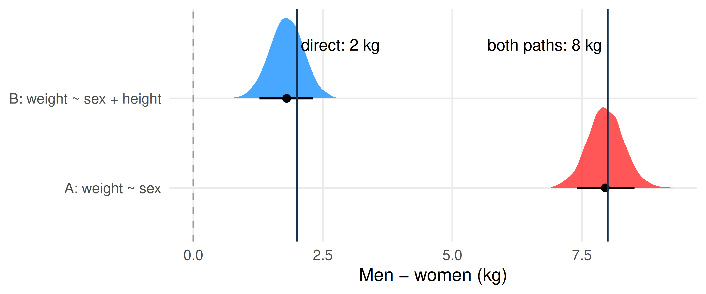
- Model A lands near 8 kg. Model B lands near 2 kg.
- Each model correctly recovers a different true number. Which one we want depends on the estimand.
Steps 4 & 5: Real data, real estimates
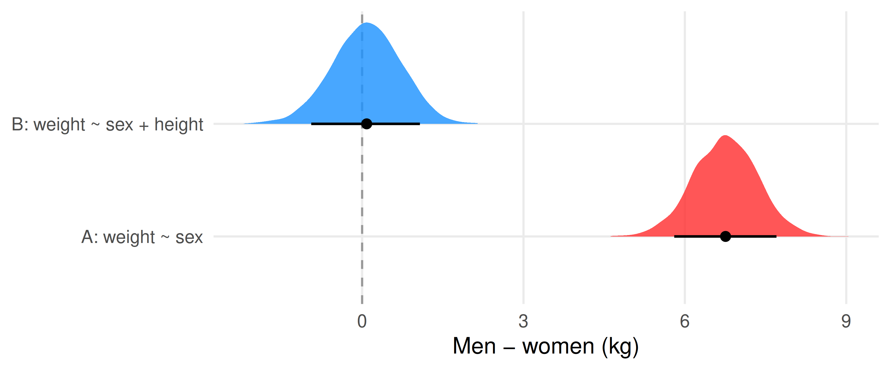
- Model A: men are about 6.8 kg heavier.
- Model B: at the same height, men are about 0.1 kg heavier. In other words, no difference.
Effects flow through paths
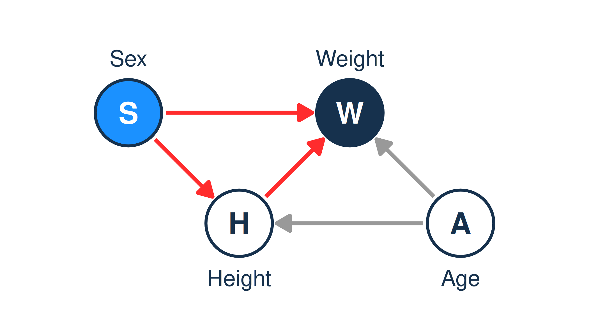
Model A lets the effect flow through both paths: the total effect.
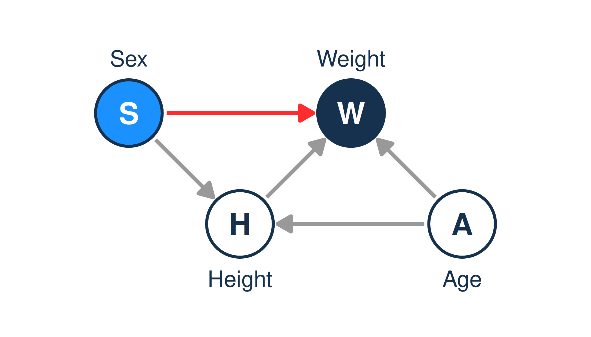
Model B holds height fixed, which blocks the path through height: only the direct effect is left.
- Sex affects weight almost entirely through height.
- Our estimand asked for the total effect, so Model A answers it. Adding height would hide the very effect we’re asking about.
What about age?
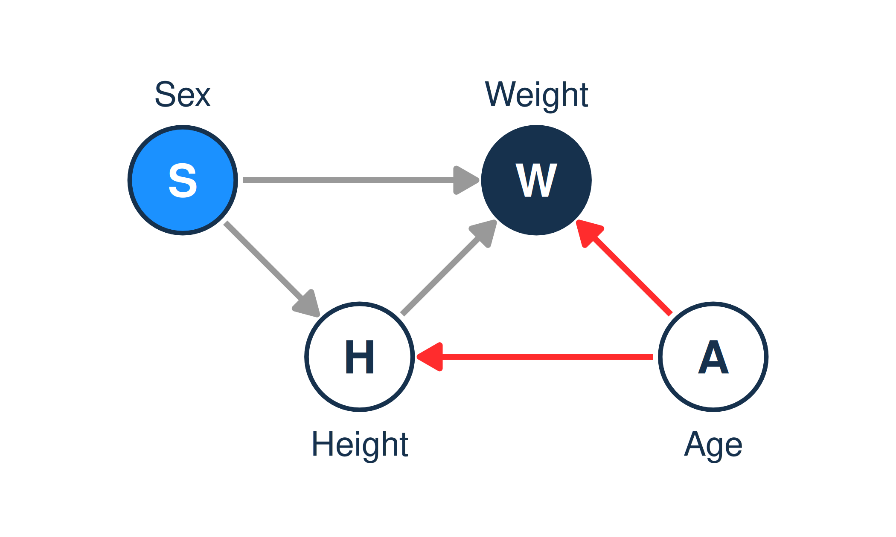
- Age is in the DAG, but nothing points from age into sex, so age opens no extra path from sex to weight.
- So for this estimand we can leave age out.
- Quick check: adding age to the model shifts the sex difference by only 0.25 kg.
- Not every variable in the DAG belongs in the model. The DAG tells us which ones do.
Remember the bedrooms?
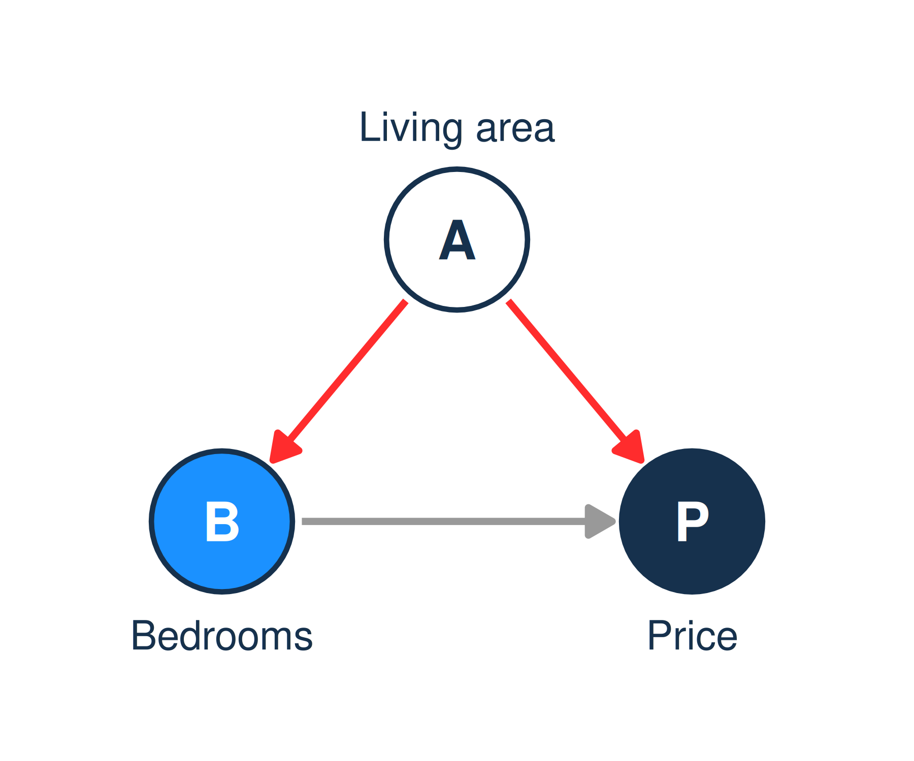
- Last week: more bedrooms go with a higher price, but among houses of similar size, more bedrooms go with a lower price.
- Bigger houses have more bedrooms and sell for more.
- So the bedroom–price correlation also flows along B ← A → P: a path that isn’t an effect of bedrooms at all.
Bedrooms: two models
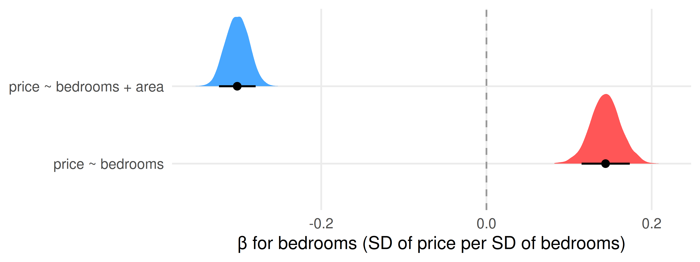
- Holding area fixed reverses the sign. An extra bedroom in the same space means smaller rooms.
- Here we should hold area fixed: the path through area isn’t the effect we want. With height, we shouldn’t. Same move, opposite advice. The DAG decides.
Part 1: The punchline
- The variables we put in a model can change, or even reverse, the answer.
- That’s because effects flow along paths through the DAG, and each variable we add can block some of them.
- So choosing variables is a causal decision, not a statistical one.
- The DAG comes first. The model follows from it.
Part 2: Designing DAGs
The science has to come first.
The data can’t draw the DAG for you
- Many different DAGs fit the same data equally well.
- The arrows come from what you know: theory, earlier research, fieldwork, experience, common sense.
- If this feels arbitrary: good. You’ve noticed that every conclusion rests on assumptions.
- The job isn’t to avoid assumptions. It’s to make them explicit, so other people can argue with them.
A recipe
- Name the estimand: “the effect of X on Y”.
- List the things that cause Y.
- List the things that cause X.
- Draw an arrow only where you believe there’s a direct cause. Every missing arrow is a claim.
- Include things you can’t measure, too (dashed circles).
- Trace every path between X and Y. Which carry the effect you want? Which don’t?
Worked example: education and birth rates
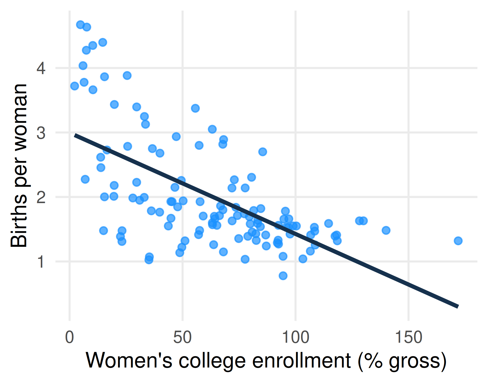
- World Bank, 2022: 120 countries.
- Estimand: the effect of women’s college enrollment on the birth rate.
- Countries where more women go to college have fewer births per woman.
- But what else is going on?
Two defensible DAGs
DAG 1: development first
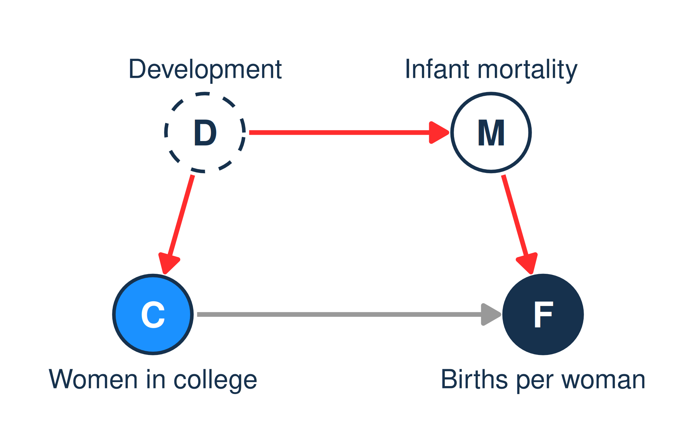
Richer countries have more women in college and fewer infant deaths. The red path isn’t an effect of education. Hold infant mortality fixed.
DAG 2: education first
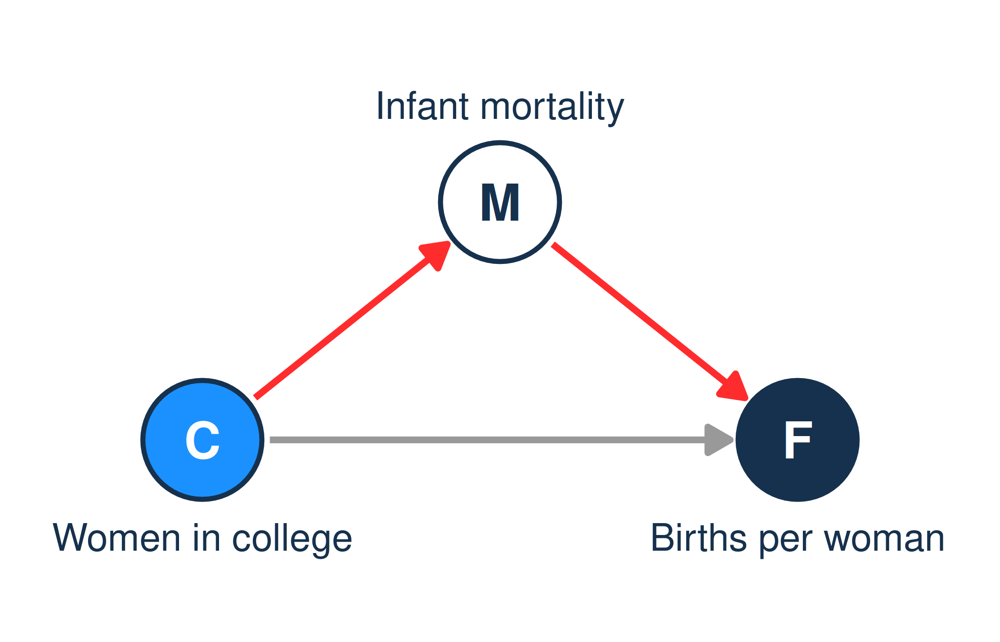
Educated mothers have healthier babies, so families need fewer births. The red path is part of education’s effect. Don’t hold infant mortality fixed.
Same data, different science, different answer
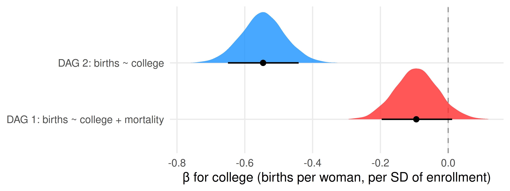
- If you believe DAG 1, education has a small effect (-0.09).
- If you believe DAG 2, a large one (-0.55).
- Which do you believe, and why? What would convince someone who believes the other?
Your turn: draw your project’s DAG
- What are your X and Y?
- Draw it at dagitty.net (next slide).
- Which arrow are you least sure about?
- What would a skeptic add?
- Is anything important unmeasured?
- Trace the paths from X to Y. Which should your model block?
Your project file already has a dag. It’s the same drawing, written as text:
dag {
College -> Fertility
Mortality -> Fertility
Development -> College
Development -> Mortality
}DAGitty
Summary
- A DAG is a drawing of our causal assumptions: arrows for direct causes.
- Cause means “changing X would change Y”. Data shows us seeing; we usually want doing.
- Workflow: estimand → generative model → statistical model → data → estimate.
- The variables we include can change, even reverse, our answers, because effects flow along different paths.
- The science comes first. Next week: the building blocks of DAGs, and rules for which paths to block.